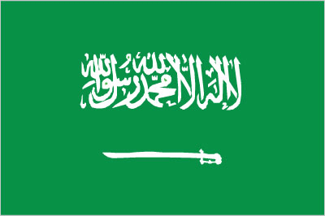
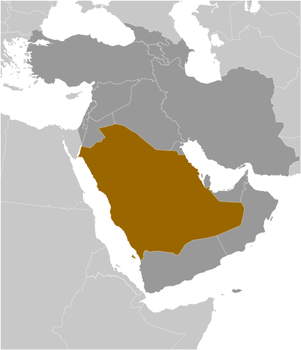
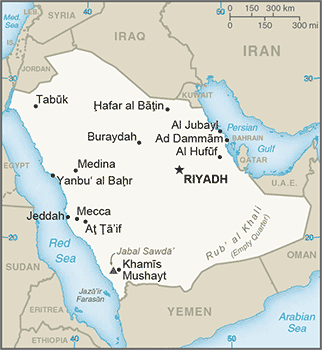

Middle East :: SAUDI ARABIA
Introduction :: SAUDI ARABIA
-
Saudi Arabia is the birthplace of Islam and home to Islam's two holiest shrines in Mecca and Medina. The king's official title is the Custodian of the Two Holy Mosques. The modern Saudi state was founded in 1932 by ABD AL-AZIZ bin Abd al-Rahman Al SAUD (Ibn Saud) after a 30-year campaign to unify most of the Arabian Peninsula. One of his male descendants rules the country today, as required by the country's 1992 Basic Law. Following Iraq's invasion of Kuwait in 1990, Saudi Arabia accepted the Kuwaiti royal family and 400,000 refugees while allowing Western and Arab troops to deploy on its soil for the liberation of Kuwait the following year. The continuing presence of foreign troops on Saudi soil after the liberation of Kuwait became a source of tension between the royal family and the public until all operational US troops left the country in 2003. Major terrorist attacks in May and November 2003 spurred a strong ongoing campaign against domestic terrorism and extremism.From 2005 to 2015, King ABDALLAH incrementally modernized the Kingdom. Driven by personal ideology and political pragmatism, he introduced a series of social and economic initiatives, including expanding employment and social opportunities for women, attracting foreign investment, increasing the role of the private sector in the economy, and discouraging businesses from hiring foreign workers. Saudi Arabia saw protests during the 2011 Arab Spring but not the level of bloodshed seen in protests elsewhere in the region. Shia Muslims in the Eastern Province protested primarily against the detention of political prisoners, endemic discrimination, and Bahraini and Saudi Government actions in Bahrain. Riyadh took a cautious but firm approach by arresting some protesters but releasing most of them quickly and by using its state-sponsored clerics to counter political and Islamist activism.The government held its first-ever elections in 2005 and 2011, when Saudis went to the polls to elect municipal councilors. In December 2015, women were allowed to vote and stand as candidates for the first time in municipal council elections, with 19 women winning seats. King SALMAN bin Abd al-Aziz Al Saud ascended to the throne in 2015 and placed the first next-generation prince, MUHAMMAD BIN NAIF bin Abd al-Aziz Al Saud, in the line of succession as Crown Prince. He designated his son, MUHAMMAD BIN SALMAN bin Abd al-Aziz Al Saud, as the Deputy Crown Prince. In March 2015, Saudi Arabia led a coalition of 10 countries in a military campaign to restore the government of Yemen, which had been ousted by Huthi forces allied with former president ALI ABDULLAH al-Salih. The war in Yemen has led to civilian casualties and shortages of basic supplies, which has drawn considerable international criticism. In December 2015, Deputy Crown Prince MUHAMMAD BIN SALMAN announced Saudi Arabia would lead a 34-nation Islamic Coalition to fight terrorism (it has since grown to 41 nations). In January 2016, Saudi Arabia executed 47 people on charges of terrorism, including Shia Muslim cleric NIMR al-Nimr. Iranian protesters overran Saudi diplomatic facilities in Iran to protest al-NIMR’s execution and the Saudi government responded by cutting off diplomatic ties with Iran.The country remains a leading producer of oil and natural gas and holds about 16% of the world's proven oil reserves as of 2015. The government continues to pursue economic reform and diversification, particularly since Saudi Arabia's accession to the WTO in 2005, and promotes foreign investment in the Kingdom. In April 2016, the Saudi government announced a broad set of socio-economic reforms, known as Vision 2030. Low global oil prices throughout 2015 and 2016 significantly lowered Saudi Arabia’s governmental revenue. In response, the government cut subsidies on water, electricity, and gasoline; reduced government employee compensation packages; and announced limited new land taxes. In coordination with OPEC and some key non-OPEC countries, Saudi Arabia agreed cut oil output in early 2017 to regulate supply and help elevate global prices.
Geography :: SAUDI ARABIA
-
Middle East, bordering the Persian Gulf and the Red Sea, north of Yemen25 00 N, 45 00 EMiddle Easttotal: 2,149,690 sq kmland: 2,149,690 sq kmwater: 0 sq kmcountry comparison to the world: 14slightly more than one-fifth the size of the UStotal: 4,272 kmborder countries (7): Iraq 811 km, Jordan 731 km, Kuwait 221 km, Oman 658 km, Qatar 87 km, UAE 457 km, Yemen 1,307 km2,640 kmterritorial sea: 12 nmcontiguous zone: 18 nmcontinental shelf: not specifiedharsh, dry desert with great temperature extremesmostly sandy desertmean elevation: 665 melevation extremes: lowest point: Persian Gulf 0 mhighest point: Jabal Sawda' 3,133 mpetroleum, natural gas, iron ore, gold, copperagricultural land: 80.7%arable land 1.5%; permanent crops 0.1%; permanent pasture 79.1%forest: 0.5%other: 18.8% (2011 est.)16,200 sq km (2012)historically a population that was mostly nomadic or semi-nomadic, the Saudi population has become more settled since petroleum was discovered in the 1930s; most of the economic activities - and with it the country's population - is concentrated in a wide area across the middle of the peninsula, from Ad Dammam in the east, through Riyadh in the interior, to Mecca-Medina in the west near the Red Seafrequent sand and dust stormsvolcanism: despite many volcanic formations, there has been little activity in the past few centuries; volcanoes include Harrat Rahat, Harrat Khaybar, Harrat Lunayyir, and Jabal Yardesertification; depletion of underground water resources; the lack of perennial rivers or permanent water bodies has prompted the development of extensive seawater desalination facilities; coastal pollution from oil spillsparty to: Biodiversity, Climate Change, Climate Change-Kyoto Protocol, Desertification, Endangered Species, Hazardous Wastes, Law of the Sea, Marine Dumping, Ozone Layer Protection, Ship Pollutionsigned, but not ratified: none of the selected agreementsSaudi Arabia is the largest country in the world without a river; extensive coastlines on the Persian Gulf and Red Sea provide great leverage on shipping (especially crude oil) through the Persian Gulf and Suez Canal
People and Society :: SAUDI ARABIA
-
28,571,770 (July 2017 est.)note: immigrants make up more than 30% of the total population, according to UN data (2015)country comparison to the world: 47noun: Saudi(s)adjective: Saudi or Saudi ArabianArab 90%, Afro-Asian 10%Arabic (official)Muslim (official; citizens are 85-90% Sunni and 10-15% Shia), other (includes Eastern Orthodox, Protestant, Roman Catholic, Jewish, Hindu, Buddhist, and Sikh) (2012 est.)note: despite having a large expatriate community of various faiths (more than 30% of the population), most forms of public religious expression inconsistent with the government-sanctioned interpretation of Sunni Islam are restricted; non-Muslims are not allowed to have Saudi citizenship and non-Muslim places of worship are not permitted (2013)0-14 years: 26.1% (male 3,825,242/female 3,631,967)15-24 years: 18.57% (male 2,842,818/female 2,462,061)25-54 years: 46.86% (male 7,559,248/female 5,829,656)55-64 years: 5.03% (male 783,673/female 653,404)65 years and over: 3.44% (male 498,830/female 484,871) (2017 est.)total dependency ratio: 40.9youth dependency ratio: 36.6elderly dependency ratio: 4.3potential support ratio: 23.2 (2015 est.)total: 27.5 yearsmale: 28.2 yearsfemale: 26.7 years (2017 est.)country comparison to the world: 1441.45% (2017 est.)country comparison to the world: 7518.3 births/1,000 population (2017 est.)country comparison to the world: 933.4 deaths/1,000 population (2017 est.)country comparison to the world: 219-0.5 migrant(s)/1,000 population (2017 est.)country comparison to the world: 128historically a population that was mostly nomadic or semi-nomadic, the Saudi population has become more settled since petroleum was discovered in the 1930s; most of the economic activities - and with it the country's population - is concentrated in a wide area across the middle of the peninsula, from Ad Dammam in the east, through Riyadh in the interior, to Mecca-Medina in the west near the Red Seaurban population: 83.5% of total population (2017)rate of urbanization: 1.81% annual rate of change (2015-20 est.)RIYADH (capital) 6.195 million; Jeddah 4.076 million; Mecca 1.771 million; Medina 1.28 million; Ad Dammam 1.064 million (2015)at birth: 1.05 male(s)/female0-14 years: 1.05 male(s)/female15-24 years: 1.15 male(s)/female25-54 years: 1.31 male(s)/female55-64 years: 1.21 male(s)/female65 years and over: 1.05 male(s)/femaletotal population: 1.19 male(s)/female (2016 est.)12 deaths/100,000 live births (2015 est.)country comparison to the world: 141total: 13.2 deaths/1,000 live birthsmale: 15.1 deaths/1,000 live birthsfemale: 11.2 deaths/1,000 live births (2017 est.)country comparison to the world: 108total population: 75.5 yearsmale: 73.4 yearsfemale: 77.7 years (2017 est.)country comparison to the world: 1052.09 children born/woman (2017 est.)country comparison to the world: 10624.6% (2016)4.7% of GDP (2014)country comparison to the world: 1512.57 physicians/1,000 population (2014)2.1 beds/1,000 population (2012)improved:urban: 97% of populationrural: 97% of populationtotal: 97% of populationunimproved: urban: 3% of populationrural: 3% of populationtotal: 3% of population (2015 est.)improved:urban: 100% of populationrural: 100% of populationtotal: 100% of populationunimproved:urban: 0% of populationrural: 0% of populationtotal: 0% of population (2015 est.)<.1% (2016 est.)8,200 (2016 est.)country comparison to the world: 102<500 (2016 est.)35.4% (2016)country comparison to the world: 145.1% of GDP (2008)country comparison to the world: 68definition: age 15 and over can read and writetotal population: 94.7%male: 97%female: 91.1% (2015 est.)total: 16 yearsmale: 17 yearsfemale: 15 years (2014)total: 28.5%male: 19.7%female: 56% (2015 est.)country comparison to the world: 29
Government :: SAUDI ARABIA
-
conventional long form: Kingdom of Saudi Arabiaconventional short form: Saudi Arabialocal long form: Al Mamlakah al Arabiyah as Suudiyahlocal short form: Al Arabiyah as Suudiyahetymology: named after the ruling dynasty of the country, the House of Saud; the name "Arabia" can be traced back many centuries B.C., the ancient Egyptians referred to the region as "Ar Rabi"absolute monarchyname: Riyadhgeographic coordinates: 24 39 N, 46 42 Etime difference: UTC+3 (8 hours ahead of Washington, DC, during Standard Time)13 provinces (mintaqat, singular - mintaqah); Al Bahah, Al Hudud ash Shamaliyah (Northern Border), Al Jawf, Al Madinah (Medina), Al Qasim, Ar Riyad (Riyadh), Ash Sharqiyah (Eastern), 'Asir, Ha'il, Jazan, Makkah (Mecca), Najran, Tabuk23 September 1932 (unification of the kingdom)Saudi National Day (Unification of the Kingdom), 23 September (1932)history: 1 March 1992 - Basic Law of Government, issued by royal decree, serves as the constitutional framework and is based on the Qur'an and the life and traditions of the Prophet Muhammadamendments: proposed by the king directly or proposed to the king by the Consultative Assembly or by the Council of Ministers; passage by the king through royal decree; Basic Law amended many times, last in 2005 (2016)Islamic (sharia) legal system with some elements of Egyptian, French, and customary law; note - several secular codes have been introduced; commercial disputes handled by special committeeshas not submitted an ICJ jurisdiction declaration; non-party state to the ICCtcitizenship by birth: nocitizenship by descent only: the father must be a citizen of Saudi Arabia; a child born out of wedlock in Saudi Arabia to a Saudi mother and unknown fatherdual citizenship recognized: noresidency requirement for naturalization: 5 years18 years of age; restricted to male; universal for municipal electionschief of state: King and Prime Minister SALMAN bin Abd al-Aziz Al Saud (since 23 January 2015); Crown Prince MUHAMMAD BIN SALMAN bin Abd al-Aziz Al Saud (born 31 August 1985); note - the monarch is both chief of state and head of governmenthead of government: King and Prime Minister SALMAN bin Abd al-Aziz Al Saud (since 23 January 2015); Crown Prince MUHAMMAD BIN SALMAN bin Abd al-Aziz Al Saud (born 31 August 1985)cabinet: Council of Ministers appointed by the monarch every 4 years and includes many royal family memberselections/appointments: none; the monarchy is hereditary; an Allegiance Council created by royal decree in October 2006 established a committee of Saudi princes for a voice in selecting future Saudi kingsdescription: unicameral Consultative Council or Majlis al-Shura (150 seats; members appointed by the monarch to serve 4-year terms); note - in early 2013, the monarch granted women 30 seats on the Councilhighest court(s): High Court (consists of the court chief and is organized into circuits with 3-judge panels, except for the criminal circuit, which has a 5-judge panel for cases involving major punishments)judge selection and term of office: High Court chief and chiefs of the High Court Circuits appointed by royal decree following the recommendation of the Supreme Judiciary Council, a 10-member body of high-level judges and other judicial heads; new judges and assistant judges serve 1- and 2-year probations, respectively, before permanent assignmentsubordinate courts: Court of Appeals; Specialized Criminal Court, first-degree courts composed of general, criminal, personal status, and commercial courts; Labor Court; a hierarchy of administrative courtsnoneother: gas companies; religious groupsABEDA, AfDB (nonregional member), AFESD, AMF, BIS, CAEU, CP, FAO, G-20, G-77, GCC, IAEA, IBRD, ICAO, ICC (national committees), ICRM, IDA, IDB, IFAD, IFC, IFRCS, IHO, ILO, IMF, IMO, IMSO, Interpol, IOC, IOM (observer), IPU, ISO, ITSO, ITU, LAS, MIGA, NAM, OAPEC, OAS (observer), OIC, OPCW, OPEC, PCA, UN, UNCTAD, UNESCO, UNIDO, UNRWA, UNWTO, UPU, WCO, WFTU (NGOs), WHO, WIPO, WMO, WTOchief of mission: Ambassador Khalid bin Salman bin Abdulaziz AL SAUD (since 21 July 2017)chancery: 601 New Hampshire Avenue NW, Washington, DC 20037telephone: [1] (202) 342-3800FAX: [1] (202) 944-5983consulate(s) general: Houston, Los Angeles, New Yorkchief of mission: Ambassador (vacant); Charge d'Affaires Christopher HENZEL (since 9 January 2017)embassy: P.O. Box 94309, Riyadh 4693mailing address: American Embassy, Unit 61307, APO AE 09803-1307; International Mail: P. O. Box 94309, Riyadh 11693telephone: [966] (11) 488-3800FAX: [966] (11) 488-7360consulate(s) general: Dhahran, Jiddah (Jeddah)green, a traditional color in Islamic flags, with the Shahada or Muslim creed in large white Arabic script (translated as "There is no god but God; Muhammad is the Messenger of God") above a white horizontal saber (the tip points to the hoist side); design dates to the early twentieth century and is closely associated with the Al Saud family which established the kingdom in 1932; the flag is manufactured with differing obverse and reverse sides so that the Shahada reads - and the sword points - correctly from right to left on both sidesnote: the only national flag to display an inscription as its principal design; one of only three national flags that differ on their obverse and reverse sides - the others are Moldova and Paraguaypalm tree surmounting two crossed swords; national colors: green, whitename: "Aash Al Maleek" (Long Live Our Beloved King)lyrics/music: Ibrahim KHAFAJI/Abdul Rahman al-KHATEEBnote: music adopted 1947, lyrics adopted 1984
Economy :: SAUDI ARABIA
-
Saudi Arabia has an oil-based economy with strong government controls over major economic activities. It possesses about 16% of the world's proven petroleum reserves, ranks as the largest exporter of petroleum, and plays a leading role in OPEC. The petroleum sector accounts for roughly 87% of budget revenues, 42% of GDP, and 90% of export earnings.Saudi Arabia is encouraging the growth of the private sector in order to diversify its economy and to employ more Saudi nationals. Over 6 million foreign workers play an important role in the Saudi economy, particularly in the oil and service sectors; at the same time, however, Riyadh is struggling to reduce unemployment among its own nationals. Saudi officials are particularly focused on employing its large youth population, which generally lacks the education and technical skills the private sector needs.In 2016, the Kingdom incurred a budget deficit estimated at 13.6% of GDP, which was financed by bond sales and drawing down reserves. Although the Kingdom can finance high deficits for several years by drawing down its considerable foreign assets or by borrowing, it has cut capital spending. Plans to cut deficits include introducing a value-added tax and reducing subsidies on electricity, water, and petroleum products. In January 2016, Crown Prince and Deputy Prime Minister MUHAMMAD BIN SALMAN announced that Saudi Arabia intends to list shares of its state-owned petroleum company, ARAMCO - another move to increase revenue and outside investment. The government has also looked at privatization and diversification of the economy more closely in the wake of a diminished oil market. Historically, Saudi Arabia has focused diversification efforts on power generation, telecommunications, natural gas exploration, and petrochemical sectors. More recently, the government has approached investors about expanding the role of the private sector in the health care, education and tourism industries. While Saudi Arabia has emphasized their goals of diversification for some time, current low oil prices may force the government to make more drastic changes ahead of their long-run timeline.$1.756 trillion (2016 est.)$1.705 trillion (2015 est.)$1.62 trillion (2014 est.)note: data are in 2016 dollarscountry comparison to the world: 16$646.4 billion (2016 est.)1.7% (2016 est.)4.1% (2015 est.)3.7% (2014 est.)country comparison to the world: 161$55,300 (2016 est.)$55,700 (2015 est.)$53,900 (2014 est.)note: data are in 2016 dollarscountry comparison to the world: 2125.2% of GDP (2016 est.)26.1% of GDP (2015 est.)38.5% of GDP (2014 est.)country comparison to the world: 41household consumption: 42.7%government consumption: 25.8%investment in fixed capital: 26.4%investment in inventories: 4.6%exports of goods and services: 30.7%imports of goods and services: -30.2% (2016 est.)agriculture: 2.7%industry: 43.4%services: 54% (2016 est.)wheat, barley, tomatoes, melons, dates, citrus; mutton, chickens, eggs, milkcrude oil production, petroleum refining, basic petrochemicals, ammonia, industrial gases, sodium hydroxide (caustic soda), cement, fertilizer, plastics, metals, commercial ship repair, commercial aircraft repair, construction2.5% (2016 est.)country comparison to the world: 9212.02 millionnote: about 80% of the labor force is non-national (2016 est.)country comparison to the world: 49agriculture: 6.7%industry: 21.4%services: 71.9% (2005 est.)5.6% (2016 est.)11.4% (2015 est.)note: data are for Saudi males only (local bank estimates; some estimates are as high as 25%)country comparison to the world: 144NA%lowest 10%: NA%highest 10%: NA%45.9 (2013 est.)country comparison to the world: 35revenues: $138.5 billionexpenditures: $221.5 billion (2016 est.)21.7% of GDP (2016 est.)country comparison to the world: 135-13% of GDP (2016 est.)country comparison to the world: 20622.3% of GDP (2016 est.)14.8% of GDP (2015 est.)country comparison to the world: 180calendar year3.5% (2016 est.)2.2% (2015 est.)country comparison to the world: 1482.5% (31 December 2008)country comparison to the world: 1107.1% (31 December 2016 est.)6.9% (31 December 2015 est.)country comparison to the world: 114$305.2 billion (31 December 2016 est.)$305.3 billion (31 December 2015 est.)country comparison to the world: 14$476.6 billion (31 December 2016 est.)$472.9 billion (31 December 2015 est.)country comparison to the world: 23$221.3 billion (31 December 2016 est.)$134.1 billion (31 December 2015 est.)country comparison to the world: 44$421.1 billion (31 December 2015 est.)$483.1 billion (31 December 2014 est.)$467.4 billion (31 December 2013 est.)country comparison to the world: 24$-27.54 billion (2016 est.)$-56.72 billion (2015 est.)country comparison to the world: 195$183.6 billion (2016 est.)$203.5 billion (2015 est.)country comparison to the world: 27petroleum and petroleum products 90% (2012 est.)China 13.6%, Japan 11.3%, India 10.7%, US 9.8%, South Korea 9.1%, Singapore 4.7% (2016)$127.8 billion (2016 est.)$159.3 billion (2015 est.)country comparison to the world: 32machinery and equipment, foodstuffs, chemicals, motor vehicles, textilesChina 16.2%, US 15%, Germany 6.3%, Japan 5.3%, UAE 5%, South Korea 4.3% (2016)$535.8 billion (31 December 2016 est.)$616.4 billion (31 December 2015 est.)country comparison to the world: 5$189.3 billion (31 December 2016 est.)$171.5 billion (31 December 2015 est.)country comparison to the world: 37$258.1 billion (31 December 2016 est.)$250.7 billion (31 December 2015 est.)country comparison to the world: 23$46.45 billion (31 December 2016 est.)$37.85 billion (31 December 2015 est.)country comparison to the world: 43Saudi riyals (SAR) per US dollar -3.75 (2016 est.)3.75 (2015 est.)3.75 (2014 est.)3.75 (2013 est.)3.75 (2012 est.)
Energy :: SAUDI ARABIA
-
population without electricity: 200,000electrification - total population: 98%electrification - urban areas: 99%electrification - rural areas: 93% (2013)318 billion kWh (2015 est.)country comparison to the world: 12292.8 billion kWh (2015 est.)country comparison to the world: 140 kWh (2016 est.)country comparison to the world: 1900 kWh (2016 est.)country comparison to the world: 19469.05 million kW (2015 est.)country comparison to the world: 1799.9% of total installed capacity (2015 est.)country comparison to the world: 250% of total installed capacity (2015 est.)country comparison to the world: 1750% of total installed capacity (2015 est.)country comparison to the world: 1980.1% of total installed capacity (2015 est.)country comparison to the world: 16410.46 million bbl/day (2016 est.)country comparison to the world: 27.273 million bbl/day (2014 est.)country comparison to the world: 10 bbl/day (2014 est.)country comparison to the world: 183266.5 billion bbl (1 January 2017 es)country comparison to the world: 22.221 million bbl/day (2014 est.)country comparison to the world: 93.237 million bbl/day (2015 est.)country comparison to the world: 71.621 million bbl/day (2014 est.)country comparison to the world: 6486,900 bbl/day (2014 est.)country comparison to the world: 17102.3 billion cu m (2015 est.)country comparison to the world: 9102.3 billion cu m (2015 est.)country comparison to the world: 130 cu m (2014 est.)country comparison to the world: 1740 cu m (2014 est.)country comparison to the world: 1818.602 trillion cu m (1 January 2017 es)country comparison to the world: 5594 million Mt (2013 est.)country comparison to the world: 10
Communications :: SAUDI ARABIA
-
total subscriptions: 3,637,442subscriptions per 100 inhabitants: 13 (July 2016 est.)country comparison to the world: 42total: 47,932,521subscriptions per 100 inhabitants: 170 (July 2016 est.)country comparison to the world: 29general assessment: modern system including a combination of extensive microwave radio relays, coaxial cables, and fiber-optic cablesdomestic: mobile-cellular subscribership has been increasing rapidlyinternational: country code - 966; landing point for the international submarine cable Fiber-Optic Link Around the Globe (FLAG) and for both the SEA-ME-WE-3 and SEA-ME-WE-4 submarine cable networks providing connectivity to Asia, Middle East, Europe, and US; microwave radio relay to Bahrain, Jordan, Kuwait, Qatar, UAE, Yemen, and Sudan; coaxial cable to Kuwait and Jordan; satellite earth stations - 5 Intelsat (3 Atlantic Ocean and 2 Indian Ocean), 1 Arabsat, and 1 Inmarsat (Indian Ocean region) (2016)broadcast media are state-controlled; state-run TV operates 4 networks; Saudi Arabia is a major market for pan-Arab satellite TV broadcasters; state-run radio operates several networks; multiple international broadcasters are available (2007).satotal: 20,768,456percent of population: 73.8% (July 2016 est.)country comparison to the world: 35
Transportation :: SAUDI ARABIA
-
number of registered air carriers: 12inventory of registered aircraft operated by air carriers: 214annual passenger traffic on registered air carriers: 32,778,827annual freight traffic on registered air carriers: 1,783.086 million mt-km (2015)HZ (2016)214 (2013)country comparison to the world: 26total: 82over 3,047 m: 332,438 to 3,047 m: 161,524 to 2,437 m: 27914 to 1,523 m: 2under 914 m: 4 (2017)total: 1322,438 to 3,047 m: 71,524 to 2,437 m: 72914 to 1,523 m: 37under 914 m: 16 (2013)10 (2013)condensate 209 km; gas 2,940 km; liquid petroleum gas 1,183 km; oil 5,117 km; refined products 1,151 km (2013)total: 5,410 kmstandard gauge: 5,410 km 1.435-m gauge (with branch lines and sidings) (2016)country comparison to the world: 81total: 221,372 kmpaved: 47,529 km (includes 3,891 km of expressways)unpaved: 173,843 km (2006)country comparison to the world: 23total: 72by type: cargo 1, chemical tanker 25, container 4, liquefied gas 2, passenger/cargo 10, petroleum tanker 20, refrigerated cargo 3, roll on/roll off 7foreign-owned: 15 (Egypt 1, Greece 4, Kuwait 4, UAE 6)registered in other countries: 55 (Bahamas 16, Dominica 2, Liberia 20, Malta 2, Norway 3, Panama 11, Tanzania 1) (2010)country comparison to the world: 62major seaport(s): Ad Dammam, Al Jubayl, Jeddah, Yanbu'container port(s) (TEUs): Ad Dammam (1,954,000), Jeddah (5,417,000) (2015)
Military and Security :: SAUDI ARABIA
-
9.85% of GDP (2016)13.33% of GDP (2015)10.68% of GDP (2014)8.98% of GDP (2013)7.68% of GDP (2012)country comparison to the world: 4Ministry of Defense: Royal Saudi Land Forces, Royal Saudi Naval Forces (includes Marine Forces and Special Forces), Royal Saudi Air Force (Al-Quwwat al-Jawwiya al-Malakiya as-Sa'udiya), Royal Saudi Air Defense Forces, Royal Saudi Strategic Rocket Forces, Ministry of the National Guard (SANG) (2015)17 is the legal minimum age for voluntary military service; no conscription (2012)
Transnational Issues :: SAUDI ARABIA
-
Saudi Arabia has reinforced its concrete-filled security barrier along sections of the now fully demarcated border with Yemen to stem illegal cross-border activities; Kuwait and Saudi Arabia continue discussions on a maritime boundary with Iran; Saudi Arabia claims Egyptian-administered islands of Tiran and Sanafirrefugees (country of origin): 30,000 (Yemen) (2017)stateless persons: 70,000 (2016); note - thousands of biduns (stateless Arabs) are descendants of nomadic tribes who were not officially registered when national borders were established, while others migrated to Saudi Arabia in search of jobs; some have temporary identification cards that must be renewed every five years, but their rights remain restricted; most Palestinians have only legal resident status; some naturalized Yemenis were made stateless after being stripped of their passports when Yemen backed Iraq in its invasion of Kuwait in 1990; Saudi women cannot pass their citizenship on to their children, so if they marry a non-national, their children risk statelessnesscurrent situation: Saudi Arabia is a destination country for men and women subjected to forced labor and, to a lesser extent, forced prostitution; men and women from South and East Asia, the Middle East, and Africa who voluntarily travel to Saudi Arabia as domestic servants or low-skilled laborers subsequently face conditions of involuntary servitude, including nonpayment and withholding of passports; some migrant workers are forced to work indefinitely beyond the term of their contract because their employers will not grant them a required exit visa; female domestic workers are particularly vulnerable because of their isolation in private homes; women, primarily from Asian and African countries, are believed to be forced into prostitution in Saudi Arabia, while other foreign women were reportedly kidnapped and forced into prostitution after running away from abusive employers; children from South Asia, East Africa, and Yemen are subjected to forced labor as beggars and street vendors in Saudi Arabia, facilitated by criminal gangstier rating: Tier 2 Watch List - Saudi Arabia does not fully comply with the minimum standards for the elimination of trafficking; however, it is making significant efforts to do so; government officials and high-level religious leaders demonstrated greater political will to combat trafficking and publically acknowledged the problem – specifically forced labor; the government reported increased numbers of prosecutions and convictions of trafficking offenders; however, it did not proactively investigate and prosecute employers for potential labor trafficking crimes following their withholding of workers’ wages and passports, which are illegal; authorities did not systematically use formal criteria to proactively identify victims, resulting in some unidentified victims being arrested, detained, deported, and sometimes prosecuted; more victims were identified and referred to protective services in 2014 than the previous year, but victims of sex trafficking and male trafficking victims were not provided with shelter and remained vulnerable to punishment (2015)regularly enforces the death penalty for drug traffickers, with foreigners being convicted and executed disproportionately; improving anti-money-laundering legislation and enforcement